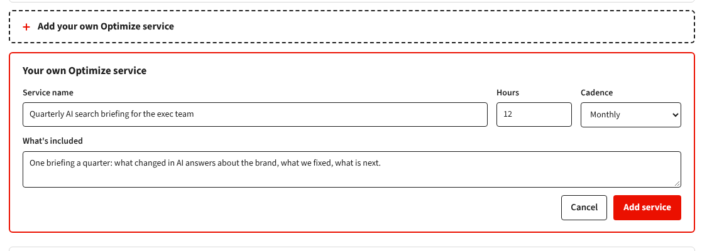
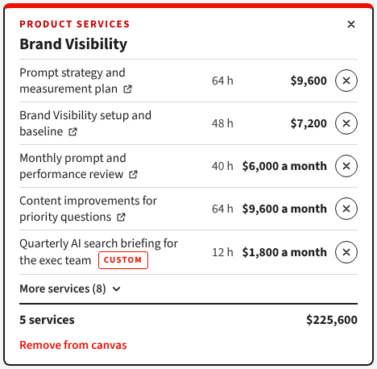

YOUR OWN SERVICE LINES
A button in each group to add a service we haven't thought of
LIVE SOW TOOL, SERVICES STEP

A dashed button at the end of Launch, Connect and Optimize opens the form right there. The line lands in that group, tagged Custom, and partners set its hours and cadence.
Today the same form already exists, but it hides at the bottom of + Add service, below about 20 services, and every custom line lands in Optimize.
NEW TOOL, ON THE CANVAS

Added on the Services tab, under its product or connection, never on the canvas. It still shows in that product's hover card, tagged Custom, so the picture matches the SOW.